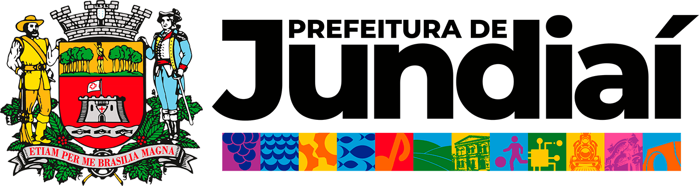
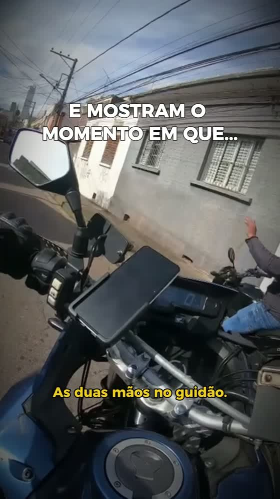
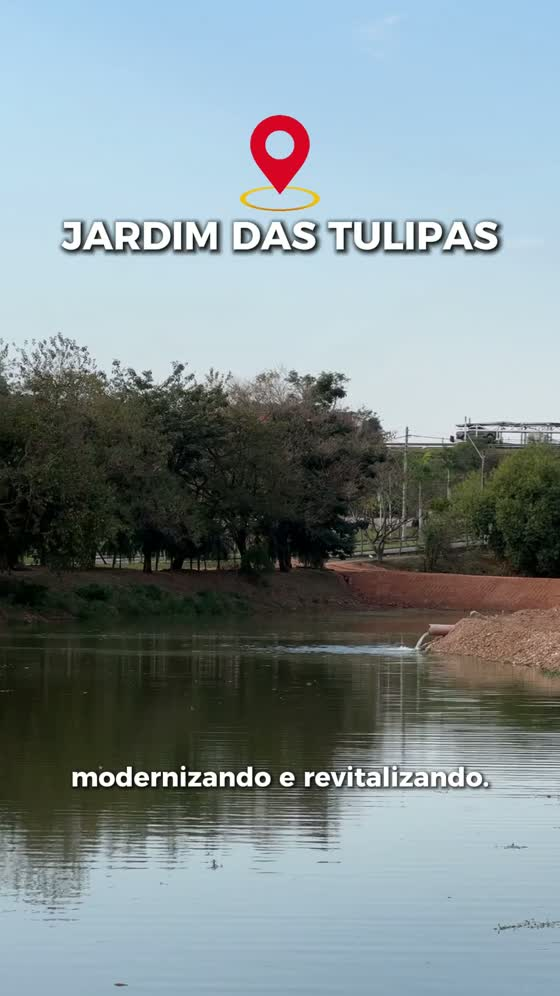
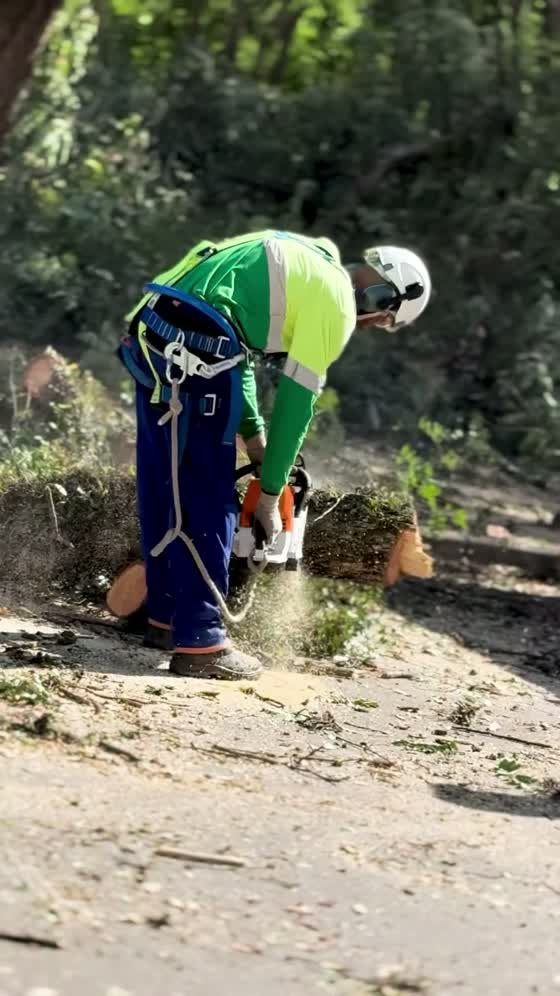

Prestação de Contas · Fechamento de Ciclo
O calendário colocou no ar as frentes em andamento: segurança pública, com videomonitoramento e reconhecimento facial; a revitalização do Parque Botânico do Jardim das Tulipas; manutenção e limpeza urbana; saúde, com novas unidades e ampliação de especialidades; educação; e o atendimento itinerante do Prefeitura na Área. A veiculação correu de 04 a 31 de agosto, em Meta Ads e YouTube.
A peça de segurança foi a mais assistida e a mais compartilhada do ciclo. A revitalização do Parque Botânico concentrou o maior volume de comentários.
Quatro linhas de veiculação em agosto, entre Meta Ads e YouTube, todas cumpridas dentro do período de 04 a 31 de agosto.
| Linha de veiculação | Meta | Entregue |
|---|---|---|
| Meta Ads · Impressões | 250.000 | 278.470 |
| Meta Ads · Visualização de vídeo | 12.000 | 16.579 |
| Meta Ads · Engajamento | 6.000 | 11.908 |
| YouTube · Visualização | 12.000 | 12.468 |
Distribuição do plano contratado entre as quatro linhas de veiculação, conforme planejamento e orientação do cliente.
| Linha | % do plano | Valor | Meta contratada |
|---|---|---|---|
| Meta Ads · Impressões | 25% | R$2.500,00 | 250.000 |
| Meta Ads · Visualização de vídeo | 30% | R$3.000,00 | 12.000 |
| Meta Ads · Engajamento | 15% | R$1.500,00 | 6.000 |
| YouTube · Visualização | 30% | R$3.000,00 | 12.000 |
| Total | 100% | R$10.000,00 |
Vídeo · Reels · 1min14 · peças ordenadas por interação por mil impressões

Vídeo · Reels · 1min07 · peças ordenadas por interação por mil impressões

Vídeo · Reels · 1min16 · peças ordenadas por interação por mil impressões

Top 3 de vídeo assistido, comentários e compartilhamentos, com o número absoluto e a taxa de cada entrada.
Onze peças no ar ao longo do mês, cobrindo segurança, meio ambiente e parques, manutenção urbana, saúde, educação, utilidade pública e atendimento itinerante.
O que cada plataforma registrou no período de 04 a 31 de agosto, apurado direto na fonte de cada uma.
| Métrica | Volume |
|---|---|
| Impressões | 355.143 |
| Alcance da linha de cobertura | 76.645 |
| Frequência | 3,63 |
| Cliques | 514 |
| Engajamento | 75.810 |
| Visualização de vídeo | 16.579 |
| Métrica | Meta | Entregue |
|---|---|---|
| Visualizações | 12.000 | 12.468 |
Distribuição das impressões por faixa de idade e por gênero, apurada na plataforma.
| Faixa | Feminino | Masculino | Não informado | Total |
|---|---|---|---|---|
| 18 a 24 | 42.675 | 37.438 | 315 | 80.428 |
| 25 a 34 | 35.153 | 37.845 | 159 | 73.157 |
| 35 a 44 | 25.607 | 27.323 | 155 | 53.085 |
| 45 a 54 | 26.239 | 24.764 | 108 | 51.111 |
| 55 a 64 | 30.202 | 21.162 | 65 | 51.429 |
| 65 ou mais | 30.364 | 15.503 | 40 | 45.907 |
| Total | 190.240 | 164.035 | 842 | 355.117 |
Cruzamento entre as pautas que a campanha veiculou e o que a imprensa independente de Jundiaí noticiou no mesmo período.
Onze peças no ar entre 04 e 31 de agosto, as quatro linhas contratadas cumpridas e um retrato claro de quais pautas a cidade acompanha em silêncio e quais fazem o morador responder.
O que a leitura de agosto sugere para o trabalho de comunicação da Prefeitura.